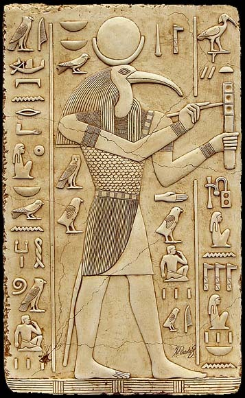

In Kabala the "god head" is simply shown openly as being the human brain within the head. Which is symbolically shown as the three upper worlds Binah, Chokhmah, Kether. Which are symbolically shown as the trine parts of the brain the left and right hemisphere and the optic thalamus. In reality most of the Kabala was stolen by the Jews when they were in Alexandria which was the hub of spiritual knowledge. Scholars have pointed this out as well the Kabala is all taken from the ancient Hellenistic spiritual teaching some Rabbi's admit this as well. The Greeks and Egyptians had the same culture.
Source
The Secret Doctrine of the Gaon of Vilna Volume II: The Josephic Messiah, Leviathan, Metatron and the Sacred Serpent: Joel David Bakst
Secrets Of The Serpent, Philip Gardiner
The Greek Kabala, Barry
Article by HP Mageson666